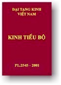

BuddhaSasana Home Page
This document is written in Vietnamese, with Unicode Times
font
|  | Ðại Tạng Kinh Việt Nam Tiểu Bộ Kinh -
Tập VII
|
Chuyện Tiền
Thân Đức Phật (IV)
|
|
Mục lục |
|
|
[01] |
Chương bảy - Phẩm bảy bài kệ 396. Chuyện Ác Hạnh (Tiền thân Kukku) |
|
[02] |
407. Chuyện Đại Hầu
Vương (Tiền thân Mahàkapi) 408. Chuyện Người Thợ Gốm (Tiền thân Kumbhakàra) 409. Chuyện Vua Dalhadhamma (Tiền thân Dalhadhamma) 410. Chuyện Con Voi Somadatta (Tiền thân Somadatta) 411. Chuyện Vua Susìma (Tiền thân Susìma) 412. Chuyện Thần Cây Bông Vải (Tiền thân Kotisimbalì) 413. Chuyện Người Chăn Dê Dhùmakàri (Tiền thân Dhùmakàri) 414. Chuyện Người Tỉnh Thức (Tiền thân Jàgara) 415. Chuyện Phần Cháo Cúng Dường (Tiền thân Kummàsapinda) 416. Chuyện Cận Thần Parantapa (Tiền thân Parantapa) |
|
[03] |
Chương tám - Phẩm tám bài kệ 417. Chuyện Hiền Mẫu Kaccàni (Tiền thân Kaccàni) |
|
[04] |
422. Chuyện Quốc Vương
Ceti (Tiền thân Cetiya) 423. Chuyện Uy Lực Dục Tham (Tiền thân Indriya) 424. Chuyện Ngọn Lửa Đốt Cháy (Tiền thân Àditta) 425. Chuyện Những Sự Kiện Không Thể Xảy Ra (Tiền thân Atthàna) 426. Chuyện Con Báo (Tiền thân Dìpi) |
|
[05] |
Chương chín - Phẩm chín bài kệ 427. Chuyện Chim Thứu (Tiền thân Gijiha) |
|
[06] |
433. Chuyện Vị Khổ Hạnh
Ca-diếp Nhiều Lông Tóc (Tiền thân Lomasa Kassapa) 434. Chuyện Chim Hồng Nga (Tiền thân Cakkavàka) 435 Chuyện Ước Mơ Chóng Phai Tàn (Tiền thân Haliddiràga) 436. Chuyện Cái Hộp (Tiền thân Samugga) 437. Chuyện Chó Rừng Pùtinumsa (Tiền thân Pùtimamsa) 438. Chuyện Con Gà Gô (Tiền thân Tittita) |
|
[07] |
Chương mười - Phầm mười bài kệ 439. Chuyện Bốn Cổng Thành (Tiền thân Catu-Dvàra) |
|
[08] |
447. Chuyện Đại Nhân Hộ
Pháp (Tiền thân Mahà Dhamma-Pàla) 448. Chuyện Kê Vương (Tiền thân Kukuta) 449. Chuyện Nam Tử Đeo Vòng Tai (Tiền thân Matta-Kundali) 450. Chuyện Phú Ông Keo Kiệt (Tiền thân Bilàri-Kosiya) 451. Chuyện Hồng Nga (Tiền thân Cakka-Vàka) 452. Chuyện Vấn Đề Trí Tuệ (Tiền thân Bhùri-Panha) 453. Chuyện Điềm Lành Lớn (Tiền thân Mahà-Mangala) 454. Chuyện Trí Giả Ghata (Tiền thân Ghata) |
|
[09] |
Chương mười một - Phẩm mười một bài kệ 455. Chuyện Voi Hiếu Dưỡng Mẹ (Tiền thân Màti-Posaka) |
|
[10] |
460. Chuyện Thái tử
Yuvanjana (Tiền thân Yuvanjana) 461. Chuyện Ðại vương Dasaratha (Tiền thân Dasaratha) 462. Chuyện Vương Tử Samvara (Tiền thân Samvara) 463. Chuyện Trí Giả Suppàraka (Tiền thân Suppàraka) |
|
[11] |
Chương mười hai - Phẩm mười hai bài kệ 464. Chuyện Tiểu Vương Điểu Kùnala (Tiền thân Culla-Kunàla) |
|
[12] |
468. Chuyện Ðại vương
Janasandha (Tiền thân Janasandha) 469. Chuyện Ðại Hắc Thiên Cẩu (Tiền thân Mahà-Kanha) 470. Chuyện Phú Ông Keo Kiệt (Tiền thân Kosiya) 471. Chuyện Con Dê (Tiền thân Mendaka) 472. Chuyện Vương Tử Liên Hoa (Tiền thân Mahà-Paduma) 473. Chuyện Bạn-Thù (Tiền thân Mittàmitta) |
-ooOoo-
Đầu trang | Mục lục | 01 | 02 | 03 | 04 | 05 | 06 | 07 | 08 | 09 | 10 | 11 | 12
Chân thành cám ơn anh HDC đã có
thiện tâm giúp tổ chức đánh máy vi tính (B. Anson, 02-2004)
Chân thành cám ơn anh NQ đã giúp dò soát (B.Anson, 03-2004)
[Mục lục Tiểu Bộ][Thư Mục Tổng Quát]
last updated: 06-05-2004